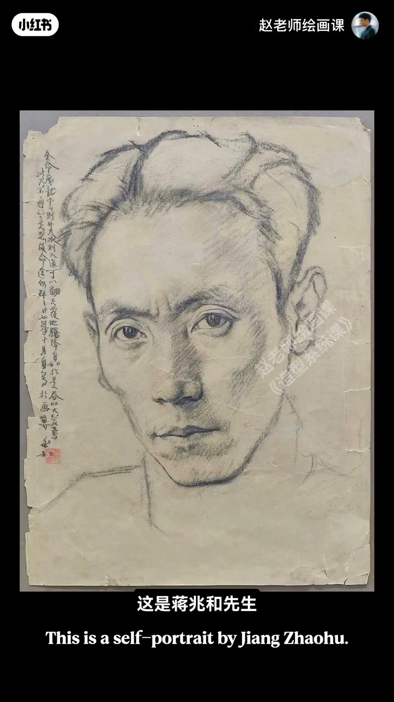
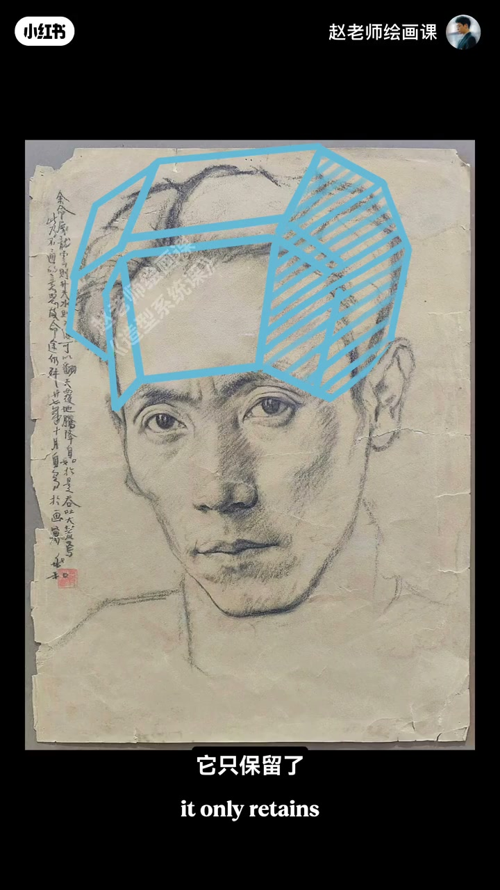
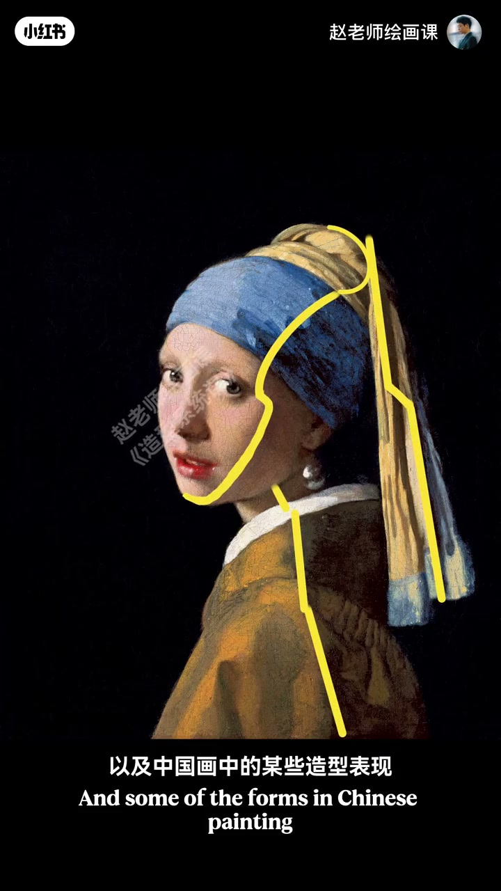
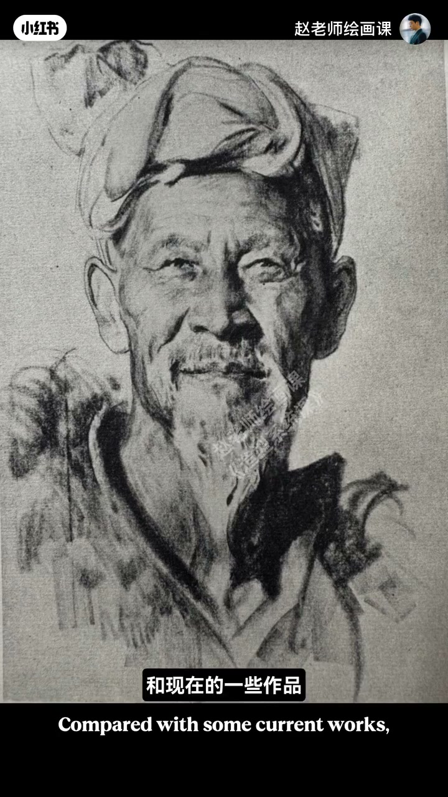

内容要点
续篇：徐悲鸿「宁方勿圆」不只轮廓——塑造体积同样要方。方不是机械棱角，而是主动强化特征与美感。蒋兆和自画像清瘦骨感，发际到额只留关键转折，颧骨处强化正侧面转折；鼻梁同理。宁方＝抓形体大转折，勿圆＝不过分盯细碎小面，人结实整体、画面精炼。安格尔、维米尔与中国画同遵循。下期预告几何形归纳法两期训练。
知识结构
蒋兆和：关键转折线＋颧骨正侧面；抓大勿碎。
大师同律；起形先大转折；几何形归纳法两期。
体积塑造时优先保住大转折与正侧面关系，主动省略碎面——结实感来自「方」的取舍，不是加细节。
00:00-01:16蒋兆和：内部体积上的方
回顾：方不是机械画出棱角，而是主动强化轮廓特征与美感。光把轮廓画好不够，塑造体积也要注意宁方勿圆。蒋兆和自画像目光深邃、清瘦脸透结实骨感，表现力离不开内部体积上的方。
从头发到额头只保留形体关键转折线；颧骨处刻意强化脸部大体正面与侧面转折，鼻梁同理。宁方让我们抓住大转折，勿圆则不要过分关注细碎小块面——人结实整体，画面精炼概括，视线自然落在最精彩处。00:35／00:50 自画像＋蓝方盒是证据。


01:16-02:20大师共通与几何形归纳预告
安格尔、维米尔以及中国画中的造型表现，一样遵循这规律——对物体体积感的高度提炼。好作品过程中从起形就紧抓大形体转折，再逐渐带出小块面：大型准确结实，小面概括；与某些碎面作品对照高下立判。
下期起用两期讲「几何形归纳法」。想扎实打好造型基础，欢迎造型系统课。


完整转录（50段）
以下文本由 Whisper medium 模型自动转录，可能存在少量识别误差，已尽可能修正。
凝方物圆是徐悲鸿先生提出的
关于造型的一个经典规律
上期我们讲过
这里的方并不是机械的画出棱角
而是主动强化轮廓的特征和美感
当然啊
光把轮廓画好还远远不够
我们在塑造体积的时候
也要注意凝方物圆
这是蒋兆和先生的一幅自画像
画中的他目光深邃
潇瘦的脸颊透著结实的骨感
这种表现力离不开内部体积上的方
比如从头发到额头
他只保留了形体关键的那条转折线
尤其是在颧骨的位置
他刻意强化了脸部这个大体积的正面
与侧面的转折
比量也是一样的道理
所以说啊
凝方是让我们抓住形体的大的转折
物圆则是不要过分的关注细碎的小块面
这样画出来的人结实而整体
画面精炼又概括
观众的视线呢
也能自然的注意到那些最精彩的部分
比如大家熟知的安格
还有维米尔
以及中国画中的造型表现
他们一样遵循这个规律
这正是对物体体积感的高度提炼
好作品的绘画过程中
你就能明显感受到这种思维的痕迹
从起行开始
就紧紧的抓住大的形体的转折
再逐渐的带出小的块面
大型准确而结实
小面概括
和现在的一些作品放在一起来对比
高价一判
从下期开始啊
我会用两期的时间详细来讲解
一个能帮你真正掌握这个规律的具体训练方法
叫几何型归纳法
如果你也想扎实的打好造型基础
让你手上的功夫不再拖累你的艺术表达
欢迎加入我的造型系统课程
我们下期再见
拜拜
by bwd6